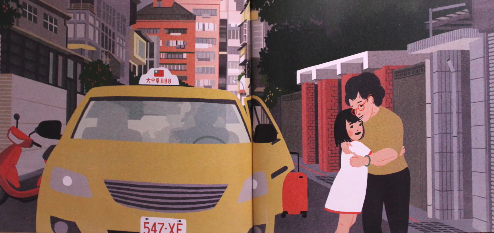
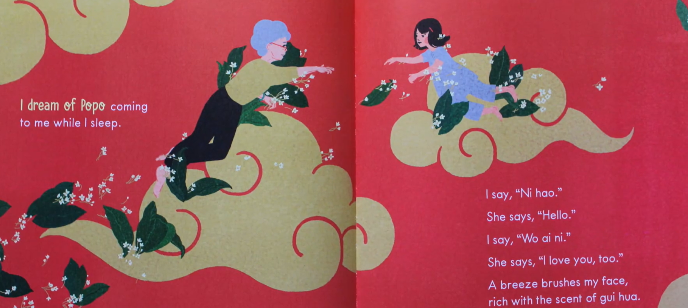

Synopsis
A young girl shares New Year rituals, kitchen moments, and everyday love with her Popo (grandmother) in Taiwan — then emigrates to America. Across oceans and time zones, they stay connected through visits, calls, and dreams, even as the girl’s Mandarin softens and Popo ages.
The story treats migration as ongoing connection rather than a one-way goodbye. Author and illustrator notes plus a Mandarin–English glossary close the book.
Why read it?
It captures a feeling many diasporic kids know: loving someone whose language, house, and city slowly become less familiar. Video chats, fading fluency, and aging are handled gently but honestly.
Author, illustrator, and editor are all Taiwanese American — a rare full #OwnVoices creative team for this story of grandmother–granddaughter love across distance.
At a glance
- Form
- Picture book
- Age / grade
- Ages 3–6 · Pre-K–1 (also rich for older readers aloud)
- Own Voices?
- Yes — Blackburne and Kuo (Taiwanese American); based on the author’s emigration from Taiwan.
- Community
- Taiwanese / Taiwanese American family; Taiwan ↔ San Diego
- Themes
- Grandparent love, immigration, language loss, aging, home across oceans